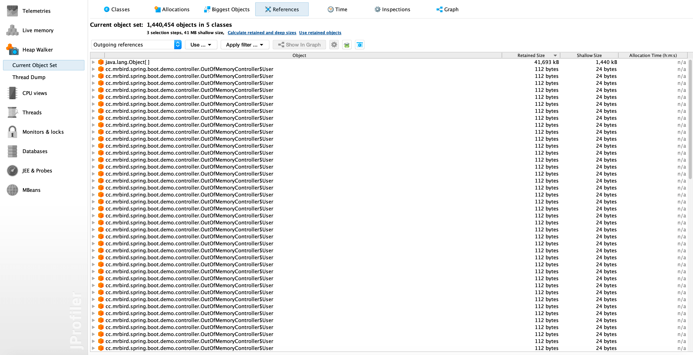

JVM参数类型
JVM的参数基本可以分为以下三种类型：
标准参数
在各个版本中基本不会发生变化的标准参数，比如有：
-help：查看帮助；-server：切换为server模式；-client：切换为client模式；-version：查看JDK版本；-showversion：输出产品版本并继续。
更多标准参数可以通过java -help查看。
X参数
X参数也称为非标准化参数，在各个JDK版本中可能存在差异，比如有：
-Xint：解释执行；-Xcomp：第一次使用就编译成本地代码；-Xmixed：混合模式，JVM自己来决定是否编译成本地代码。
XX参数
XX也是非标准化参数，主要用于JVM调优和问题定位，XX参数分为两大类型：
Boolean类型，格式：
-XX:[+-]<name>标识启用或禁用name属性，比如：-XX:+PrintGCDetails-XX:+UseG1GC
非Boolean类型（key-value形式），格式：
-XX:<name>=<value>表示name属性的值是value，比如：-XX:MaxGCPauseMillis=500-XX:GCTimeRatio=19
运行时JVM参数查看
-XX:+PrintFlagsInitial：查看参数初始值，=表示默认值，:=表示修改后的值。-XX:+PrintFlagsFinal：查看参数最终值。-XX:+UnlockExperimentalVMOptions：解锁实验参数。-XX:+UnlockDiagnosticVMOptions：解锁诊断参数。-XX:+PrintCommandLineFlags：打印命令行参数。
上面这些命令查看的参数值对应的进程为执行当前命令进程，如果需要查看某个运行时Java应用相关参数，则可以使用下面这些命令：
jps：查看Java进程ID，-l显示完整启动类名。jinfo：查看运行时Java程序相关参数值，使用方式jinfo -flag [参数名] [进程ID]。
比如当前有一个正常运行的boot-app.jar，查看其最大堆内存：
jstat统计JVM信息
jstat可以监控许多JVM信息，下面逐一演示，演示基于boot-app.jar，进程号为4425。
class
监控类加载器行为信息：
各列含义如下：
- Loaded：已加载类数量；
- Bytes：已加载类大小，单位为KB；
- Unloaded：已卸载类数量；
- Bytes：已卸载类大小，单位为KB；
- Time：执行类加载和卸载所花费的时间。
compiler
监控HotSpot VM实时编译器信息：
- Compiled：执行的编译任务数量；
- Failed：编译失败任务数量；
- Invalid：无效的编译数量；
- Time：编译耗时；
- FailedType：上次编译失败的类型；
- FailedMethod：编译失败的类名和方法。
gc
统计堆区GC信息：
- S0C：当前幸存者0区大小，单位KB；
- S1C：当前幸存者1区大小，单位KB；
- S0U：幸存者0区已使用内存大小，单位KB；
- S1U：幸存者1区已使用内存大小，单位KB；
- EC：伊甸园区大小，单位KB；
- EU：伊甸园区已使用内存大小，单位KB；
- OC：老年代内存大小，单位KB；
- OU：老年代已使用内存大小，单位KB；
- MC：元空间大小，单位KB；
- MU：元空间已使用内存大小，单位KB；
- CCSC：压缩类空间大小，单位KB；
- CCSU：压缩类空间已使用内存大小，单位KB；
- YGC：YGC次数；
- YGCT：YGC耗时；
- FGC：FGC次数；
- FGCT：FGC耗时；
- GCT：GC总耗时。
gccapacity
和GC相关的一些内存大小统计信息：
部分列含义和-gc相同，下面仅列出不同部分：
- NGCMN：新生代最小内存大小，单位KB；
- NGCMX：新生代最大内存大小，单位KB；
- NGC：新生代当前内存大小，单位KB；
- OGCMN：老年代最小内存大小，单位KB；
- OGCMX：老年代最大内存大小，单位KB；
- MCMN：元空间最小内存大小，单位KB；
- MCMX：元空间最大内存大小，单位KB；
- CCSMN：压缩类空间最小内存大小，单位KB；
- CCSMX：压缩类空间最大内存大小，单位KB。
gcutil
GC信息摘要、总览：
部分列含义和-gc相同，下面仅列出不同部分：
- S0：幸存者0区内存使用率；
- S1：幸存者1区内存使用率；
- E：伊甸园区内存使用率；
- O：老年代内存使用率；
- M：元空间内存使用率；
- CCS：压缩类空间内存使用率。
gccause
大部分和-gcutil一致，新增了LGCC和GCC：
- LGCC：最后一次GC的原因；
- GCC：当前GC原因。
gcnew
一些和新生代GC相关的统计信息：
部分列含义和-gc相同，下面仅列出不同部分：
- TT：Tenuring threshold，即当前对象从新生代晋升到老年代的年龄阈值（JVM动态调整）；
- MTT：MaxTenuringThreshold，最大可设晋升阈值（默认值，或者我们手动设置的值）；
- DSS：期望的幸存区的大小（从上面截图可以看出，值为21504KB，和幸存者0区、幸存者1区一样大，即DSS的值为当前幸存者区的一半。DSS的计算公式为：当前幸存者区 * TargetSurvivorRatio/100，TargetSurvivorRatio的默认值为50，所以DSS计算出来为当前幸存者区的一半。关于对象从新生代晋升到老年代的细节可以参考这篇博文：https://www.cnblogs.com/wangshen31/p/10427802.html）
gcnewcapacity
统计新生代容量相关信息：
部分列含义和-gc、-gccapacity相同，下面仅列出不同部分：
- S0CMX：幸存者0区最大内存，单位KB；
- S1CMX：幸存者1区最大内存，单位KB；
- ECMX：伊甸园区最大内存，单位KB；
gcold
一些和老年代GC相关统计信息：

这些列含义都已涉及，不再赘述。
gcoldcapacity
一些和老年代容量相关统计信息：
这些列含义都已涉及，不再赘述。
gcmetacapacity
一些和元空间容量相关统计信息：
这些列含义都已涉及，不再赘述。
printcompilation
HotSpot VM编译方法信息统计：
- Compiled：近期编译方法数；
- Size：近期编译方法字节数；
- Type：近期编译方法类型；
- Method：近期编译的方法类名和方法名。
上面的jstat命令输出的是当前统计信息，我们还可以打印出一段时间内的统计信息，比如每隔1秒输出一次，共输出5次：
jmap+JProfiler内存溢出实战
jmap可以为Java进程打印出内存信息。
Java程序内存溢出一般分为堆内存溢出和元空间内存溢出，内存溢出后，我们可以通过JProfiler（eclipse MAT也行，本文不介绍）软件分析内存映像文件来定位问题所在。
场景构建
首先模拟堆内存溢出和元空间内存溢出场景。新建一个SpringBoot项目，然后创建一个OutOfMemoryController：
1 | import jdk.internal.org.objectweb.asm.ClassWriter; |
在heapOutOfMemory方法中，我们不断创建User对象，并添加到成员变量data集合中，强引用无法得到释放，最终导致堆内存溢出；
在metaspaceOutOfMemory()方法中，我们不断加载新的class，最终元空间也将内存溢出。
为了测试方便，我们通过参数-Xms64m -Xmx64m -XX:MetaspaceSize=64m -XX:MaxMetaspaceSize=64m限制堆和元空间大小。
启动Boot应用，访问http://localhost:8080/heap，结果如下：
1 | java.lang.OutOfMemoryError: Java heap space |
重启应用，访问http://localhost:8080/metaspace，结果如下：
1 | java.lang.OutOfMemoryError: Metaspace |
场景构建完毕。
导出内存映像文件
导出内存映像文件分为异常自动导出和通过jmap命令导出两种方式。
内存溢出自动导出
添加-XX:+HeapDumpOnOutOfMemoryError -XX:HeapDumpPath=/Users/mrbird/Desktop参数，表示内存溢出时，导出Dump文件，路径为/Users/mrbird/Desktop。
添加后，启动应用，访问http://localhost:8080/heap，控制台打印：
1 | java.lang.OutOfMemoryError: Java heap space |
桌面多了个java_pid22958.hprof文件。
重启应用，访问http://localhost:8080/metaspace， 桌面多了个java_pid23003.hprof文件。
jmap命令导出
含义为，通过jmap命令导出dump文件，format=b表示导出二进制文件，file=/Users/mrbird/Desktop/java_23003.hprof表示导出到/Users/mrbird/Desktop/java_23003.hprof文件中，最后跟上进程号。导出后，我的桌面上多了个java_23003.hprof文件。
JProfiler分析dump文件
使用JProfiler软件打开上面导出的java_pid22958.hprof文件：
这一页展示了各class对应实例内存占用从大到小排列情况。点击Biggest Objects查看大文件：
在最大的对象上右键选择Use Retained Objects查看对象占用情况：

可以看到里面密密麻麻的都是我们不断往里添加的User对象。一个User对象的大小为112bytes，整个集合对象占了将近40M。
打开java_pid23003.hprof文件，和上面的步骤一样，查看Use Retained Objects：
可以看到导致元空间溢出的原因是因为我们加载过多class所致。
jstack定位死循环、死锁
jstack可以打印出指定Java进程内部线程的堆栈信息。
因为下面示例需要使用到top命令，该命令在Mac、Linux上有些差异，所以下面例子选择在Linux上演示，我的虚拟机IP为192.168.33.10。
在上面的SpringBoot项目中，新建一个LoopController：
1 |
|
loop方法里制造死循环，启动项目，访问http://192.168.33.10:8080/loop后，使用top命令查看进程情况：
可以看到，进程ID为5806的进程CUP使用率飙到了100%，这个进程就是我们的boot-app：
然后接着使用top -p 5806 -H查看5806进程内部各线程情况：
可以看到占用CPU资源的线程的ID为5830。因为通过jstack查看Java应用线程时，线程ID为16进制格式，所以我们需要将5830转换为16进制数：
1 | printf "%x" 5830 |
结果为16c6。使用jstack 5806 > 5806.txt命令将5806进程的Java线程情况导出到5806.txt文件中，导出后，通过vim命令搜索16c6，结果如下所示：

可以看到，占用CPU的线程为http-nio-8080-exec-1，对应出问题的代码为cc.mrbird.spring.boot.demo.controller.LoopController.loop的第11行。
死循环问题定位完毕后，我们再新建一个LockController来模拟死锁情况：
1 |
|
启动项目，访问http://192.168.33.10:8080/lock，然后使用jstatck命令查看Java线程情况：
可以看到存在一个死锁，thread1和thread2线程互相等待锁获取。
jvisualvm监控
jvisualvm是JDK自带的监控Java进程的图形化工具，命令行输入jvisualvm即可启动。
监控本地进程
启动jvisualvm，在本地列表里可以看到本机正在运行的Java进程：
双击pid为41202的boot应用进程：
各tab功能：
- 概述：显示JDK版本、进程ID，JVM参数配置等基础信息；
- 监视：以图形化界面显示CPU使用率，内存使用情况，类加载信息，线程信息等，同时可以手动触发GC，导出堆内存Dump等；
- 线程：当前进程的Java线程列表，同时也可以导出线程Dump文件；
- 抽样器：可以对当前进程的CPU使用率内存占用情况进行抽样分析；
- Profiler：对抽样进行性能分析；
- Visual GC：安装的一个插件，用于图形化显示堆内存情况。
个人常用的功能有监视页面的内存Dump和线程页面的线程Dump，它们功能和上面介绍的jmap、jstack类似。
浏览器访问http://localhost:8080/heap后，点击监视页面的“堆Dump”按钮：
然后在内存占用较大的User类上右键选择在实例视图中显示：
可以看到通过引用追踪，我们可以定位到内存溢出的地方为OutOfMemoryController的data成员变量，类型为ArrayList，内部使用Object数组装载User。这个功能和上面使用JProfiler解析Dump文件追踪内存泄露原因类似。
除了追踪内存问题，我们可以通过点击线程页面的线程Dump按钮导出线程Dump文件来分析进程里的Java线程情况，这和jstack功能类似。
重启boot应用，重新使用jvisualvm连接，访问http://localhost:8080/loop：
可以看到名称为http-nio-8080-exec-1的线程CPU使用率为100%，点击线程Dump按钮导出Dump文件：
通过线程名称定位到问题代码。
重启boot应用，重新使用jvisualvm连接，访问http://localhost:8080/lock：
可以看到jvisualvm检查到了死锁，通过dump文件分析死锁原因：
除了导出Dump文件外，jvisualvm也可以导入上面我们通过jmap命令导出的Dump文件，这里就不演示了。
监控远程进程
远程运行的Java进程也可以通过jvisualvm监控。以在虚拟机192.168.33.10中运行的boot应用为例，要进行远程监控，需要在启动命令上配置jmx配置：
1 | nohup java -Dcom.sun.management.jmxremote \ |
-Dcom.sun.management.jmxremote：表示开启jmx远程连接；-Dcom.sun.management.jmxremote.port=8081：表示jmx端口号为8081；-Dcom.sun.management.jmxremote.ssl=false：放了方便，这里不使用SSL连接；-Dcom.sun.management.jmxremote.authenticate=false：为了方便，这里不使用用户名密码认证；-Djava.net.preferIPv4Stack=true：表示使用ipv4；-Djava.rmi.server.hostname=192.168.33.10：指定主机地址。
配置好后，运行该脚本启动boot项目，然后在jvisualvm的远程列表中添加远程主机：
然后添加jmx连接：
连接成功后，就可以通过jvisualvm监控远程Java进程了：
附录1 - Dump文件中线程状态
| Thread State | Description |
|---|---|
NEW | The thread has not yet started. |
RUNNABLE | The thread is executing in the JVM. |
BLOCKED | The thread is blocked waiting for a monitor lock. |
WAITING | The thread is waiting indefinitely for another thread to perform a particular action. |
TIMED_WAITING | The thread is waiting for another thread to perform an action for up to a specified waiting time. |
TERMINATED | The thread has exited. |
参考链接：